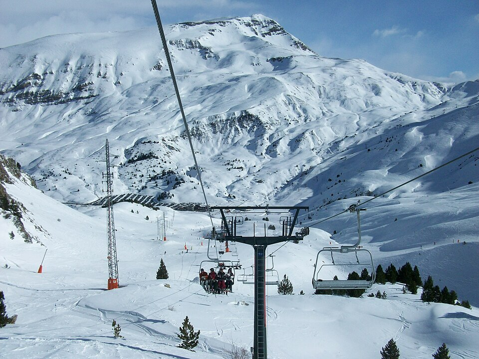

Cerler
Valle de Benasque · Huesca
- Pistas
- 61 km
- 103 trazados
- Cota máxima
- 2617 m
- mínima 1503 m
- Desnivel
- 1114 m
- esquiable
- Remontes
- 20
- 10 telesillas · 4 telesquís
Sobre Benasque y rodeada de tresmiles, es la estación del grupo Aramón que alcanza más altura en el Pirineo aragonés.
Foto: total 13 · CC BY 2.0 · Wikimedia Commons
Hoy
Cerler ahora mismo
Estado de pistas y remontes según el último parte publicado, y las webcams de la estación.
Webcams
Estado y webcams de Infonieve.es, a partir de los partes y cámaras de cada estación. Antes de salir, confírmalo en la web oficial o en su parte de nieve.
Próximos 7 días
Nieve y tiempo previstos
Previsión para la cota alta (2617 m) y la base (1503 m).
Previsión de modelos meteorológicos de Open-Meteo (CC BY 4.0). Es previsión, no observación: lo que hay abierto hoy está en el estado de pistas.
Plano
Plano de pistas
Pasa el cursor o toca una pista o un remonte para ver su nombre, longitud y desnivel.
Trazados: © colaboradores de OpenStreetMap (ODbL), datos del 10 de agosto de 2026. No es el plano oficial de la estación ni refleja aperturas.
Pistas
103 pistas, 61 km
La más larga con nombre es Canal Amplla (2,3 km, negra).
VerdeMuy fácil
17 pistas · 3,7 km
Ver nombres
- Fontanals 1,2 km
- Robellons 0,5 km
- Robellons 0,5 km
- Skitty Area 0,2 km
- Robellons 0,1 km
- Robellons 0,1 km
- Ansils 0,1 km
- Robellons 0,1 km
- Snowspeed 0 km
AzulFácil
37 pistas · 25,1 km
Ver nombres
- Labert 1,7 km
- Basibé 1,6 km
- Ampriu 1,6 km
- Les Pllanes 1,6 km
- Barranco 1,5 km
- Perdiz Blanca 1,4 km
- Epic Trail 1,2 km
- Urogallo 1,2 km
- Nou Fonts 1,1 km
- Nou Fonts 1 km
- Barranco 0,9 km
- Ixarsos 0,9 km
- Rincón del Cielo 0,9 km
- La Liebre 0,9 km
- Sarrau 0,7 km
- Abedules 0,7 km
- Abedules 0,7 km
- Farnuserals 0,6 km
- Basibé 0,6 km
- Cabanera 0,5 km
- Les Abelles 0,4 km
- BoarderCross 0,4 km
- Basibé 0,4 km
- Camino Les Pllanes 0,4 km
- BoarderCross 0,4 km
- Ampriu 0,4 km
- Perdiz Blanca 0,3 km
- Bosque Encantado 0,2 km
- Camino Les Pllanes 0,2 km
- Moixardóns 0,2 km
- Ampriu 0,2 km
- Camino Les Pllanes 0,1 km
- Camino Les Pllanes 0,1 km
- Barranco 0,1 km
- Nou Fonts 0,1 km
- Sarrau 0,1 km
RojaIntermedia
33 pistas · 22,7 km
Ver nombres
- Camino del Sarrau 1,8 km
- La Solana 1,5 km
- Canal del Gallinero 1,4 km
- La Olla 1,3 km
- Cogulla 1,3 km
- Las Codornices 1,2 km
- Falda Gallinero 1,2 km
- Tubo del Cogulla 1,2 km
- Pinar 1,1 km
- Pilonas 1,1 km
- La Rabosa 1 km
- El Royero 0,9 km
- Esparbé 0,8 km
- Tempestades 0,8 km
- La Fetiella 0,8 km
- Güelles 0,7 km
- Torcaces 0,6 km
- Las Codornices 0,5 km
- Pasolobino 0,4 km
- Abedules 0,4 km
- Ardillas 0,4 km
- Les Falles 0,3 km
- Cantal 0,3 km
- Cantal 0,3 km
- Chinebros 0,3 km
- Els Salineras 0,3 km
- Camino del Sarrau 0,2 km
- Pinar 0,1 km
- Camino del Sarrau 0,1 km
- La Olla 0,1 km
- Camino del Sarrau 0,1 km
- Tempestades 0,1 km
NegraDifícil
15 pistas · 9,8 km
Ver nombres
- Canal Amplla 2,3 km
- Marmotas 1,2 km
- El Tubo 0,9 km
- Barraina 0,8 km
- Muidors 0,7 km
- El Ibón 0,6 km
- Quebrantahuesos 0,5 km
- Pitarroy 0,5 km
- Edelweiss 0,5 km
- Águilas 0,4 km
- La Pala Dreta 0,3 km
- La Fuina 0,3 km
- Cresta 0,2 km
- Padellasos 0,2 km
Sin clasificarSin dificultad en los datos
1 pistas · 0,1 km
Ver nombres
- Basibé 0,1 km
Remontes
20 remontes
El de mayor desnivel: Telesilla El Molino, 515 m.
| Remonte | Tipo | Longitud | Desnivel | Llegada |
|---|---|---|---|---|
| Telesilla El Molino | Telesilla | 2208 m | 515 m | 2019 m |
| Telesilla Rincón del Cielo | Telesilla | 1677 m | 490 m | 2310 m |
| Telesilla Basibé | Telesilla | 1933 m | 468 m | 2375 m |
| Telesilla Gallinero | Telesilla | 1137 m | 465 m | 2615 m |
| Telesilla Ampriu | Telesilla | 1227 m | 421 m | 2321 m |
| Telesilla Cogulla | Telesilla | 1142 m | 371 m | 2366 m |
| Telesilla Castanesa | Telesilla | 1323 m | 350 m | 2388 m |
| Telesilla Batisielles | Telesilla | 1338 m | 349 m | 2255 m |
| Telesilla Sarrau | Telesilla | 719 m | 318 m | 2321 m |
| Telesilla Robellons | Telesilla | 856 m | 138 m | 1994 m |
| Ampriu II | Telesquí | 225 m | 48 m | 1953 m |
| Snowpark | Telesquí | 161 m | 35 m | 2066 m |
| Puentet | Telesquí | 194 m | 31 m | 1886 m |
| Ampriu I | Telesquí | 136 m | 26 m | 1932 m |
| Ansils | Cinta | 77 m | 12 m | 1517 m |
| Caragol | Cinta | 91 m | 9 m | 2009 m |
| Ampriu Park | Cinta | 56 m | 8 m | 1911 m |
| Rabachol | Cinta | 51 m | 7 m | 2018 m |
| Infantil | Cinta | 54 m | 5 m | 1913 m |
| Turberes | Cinta | 76 m | 4 m | 1912 m |
Longitud en planta y desnivel sobre el modelo de relieve. No incluye horarios ni estado de apertura.
Guía práctica
Antes de ir a Cerler
Cómo llegar
Valle de Benasque, Huesca. Coordenadas del dominio: 42,5602, 0,5558.
Ver en OpenStreetMap · Cómo llegar en coche
En invierno comprueba el estado de la carretera y si hacen falta cadenas.
El terreno
- Pico de Castanesa, 2858 m
- Tuca de Pusolobino, 2778 m
- Tuca de Roques Trencades, 2755 m
- Pic dels Cibollers, 2749 m
Enlaces oficiales
Forfaits, horarios y aperturas cambian durante la temporada: los publica la estación.
Para parar en pistas
- Cota 2000
- Remáscaro Après-Ski
- Cafetería El Molino
- La Picada
- Planet 81
- La Cabana
- Bar Restaurante Chiniella
- La Borda del Mastín
Restaurantes y cafeterías con nombre en OpenStreetMap. Sin horarios.
Cerler sin cobertura
La app para Android guarda los mapas en el móvil y te ayuda a encontrarte con tu grupo.